Last Updated: 2022-11-10
This codelab is focused on writing unit test with JUnit5 and how to refactor the code in different scenarios so that they can be unit testable.
https://github.com/PanatchaiV22/solid-principles
git clone git@github.com:USER_NAME/solid-principles.git
git switch feature/original-code
Open the test file JUnit5LifeCycle.kt by using short-key Command + Shift + O then type JUnit5LifeCycle.kt
To run the test using short-key Control + Shift + R.
Observe the logs inside the test result. Can you make a guess?
Right click on the test and select Run ‘JUnit5LifeCycle'
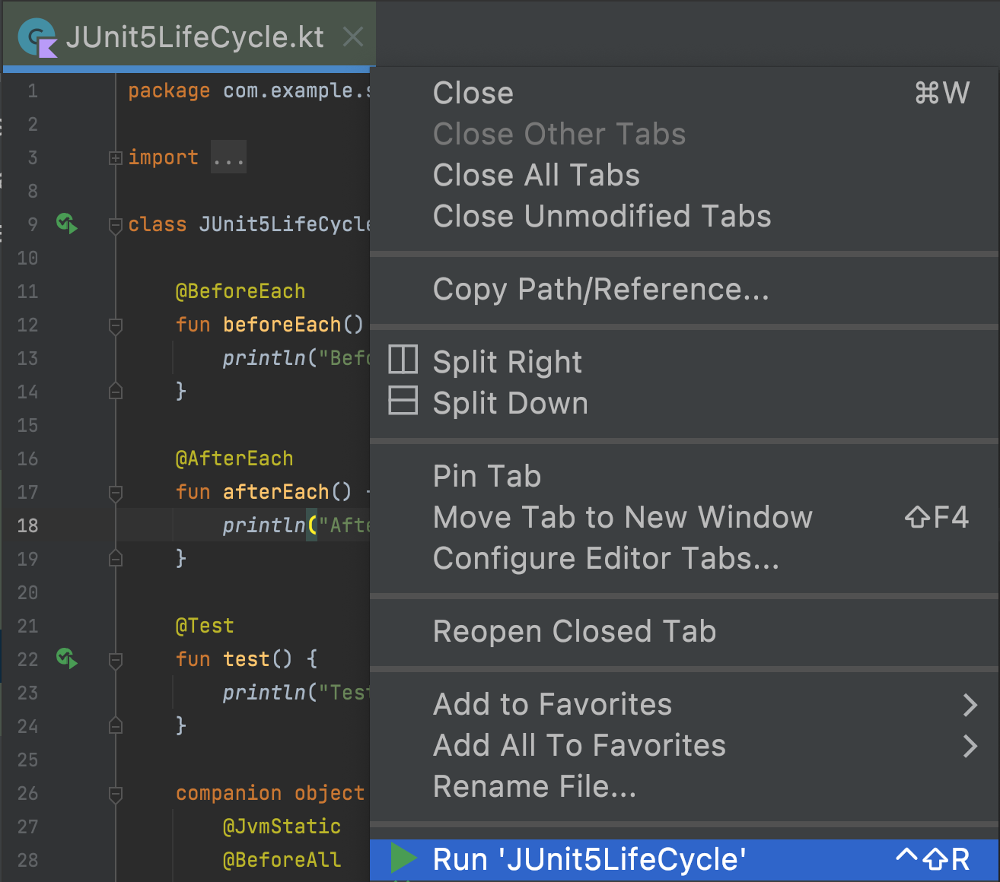
If you click on the JUnit5LifeCycle then you will see the following
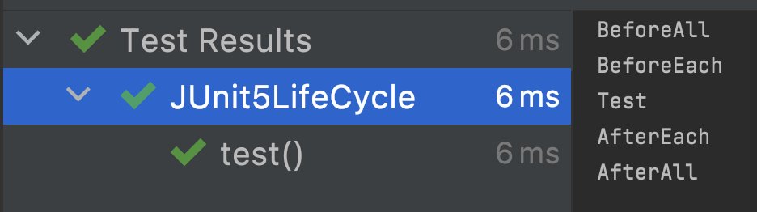
and if you click on the test() function, you will instead see the following
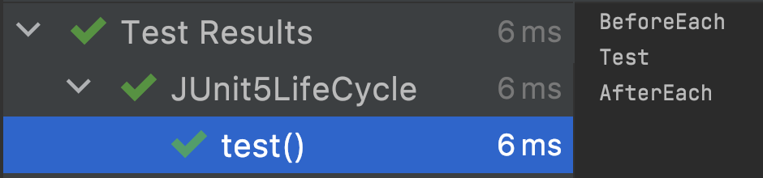
This is because JUnit5LifeCycle represents our test class, a container, which contains each individual test such as our test() method. It should be apparent that both BeforeAll and AfterAll run once per test-class or container before and after all the tests are executed respectively. For that reason both have to be statically defined as @JvmStatic as shown below.
companion object {
@JvmStatic
@BeforeAll
fun beforeAll() {
println("BeforeAll")
}
@JvmStatic
@AfterAll
fun afterAll() {
println("AfterAll")
}
}The rest is self explanatory where BeforeEach will be executed before each Test method, then the Test itself is executed, followed by AfterEach. Next we will be doing another experiment on a different lifecycle.
In addition, you can also define @BeforeAll and @AfterAll as non-static function just like any other regular functions by annotating your test class with @TestInstance(TestInstance.Lifecycle.PER_CLASS). However, this will also change the behavior of the test, which we will be getting into this in detail in a bit.
@Test @Test
fun test() { fun test1() {
println("Test") —> println("Test1 ${this.hashCode()}")
} }@Test
fun test2() {
println("Test2 ${this.hashCode()}")
}Then Run Test
It should be plentifully obvious to point out now that BeforeAll and AfterAll run before and after all the tests respectively.
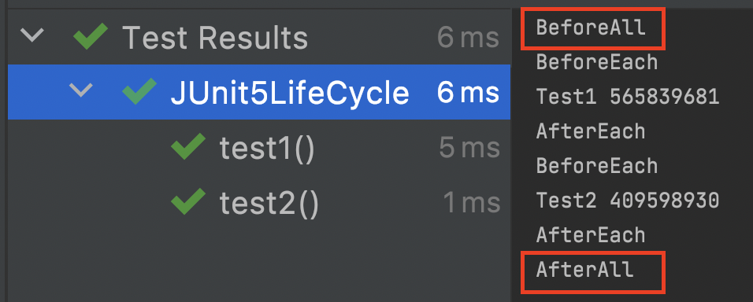
While BeforeEach and AfterEach run before and after each individual test respectively as shown below.
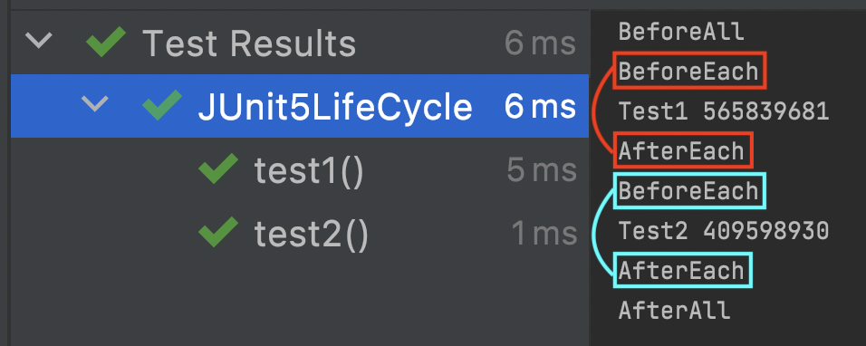
This is also important to note that each individual test run on different instance of the test which means they run on a totally separated environment and set of variables. This is because, by default, the lifecycle of the test is per Test method.
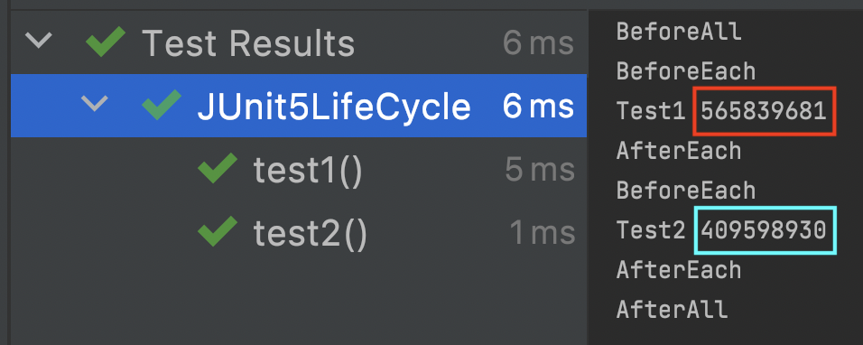
There are 2 types of lifecycle such as PER_METHOD lifecycle as you have already seen from the above examples. The other is called PER_CLASS lifecycle and the different is the PER_CLASS lifecycle runs on a single instance.
Annotate the test to change its lifecycle to PER_CLASS.
@TestInstance(TestInstance.Lifecycle.PER_CLASS)
class JUnit5LifeCycleThen Run Test
As you can see, the test instance id is the same throughout the tests.
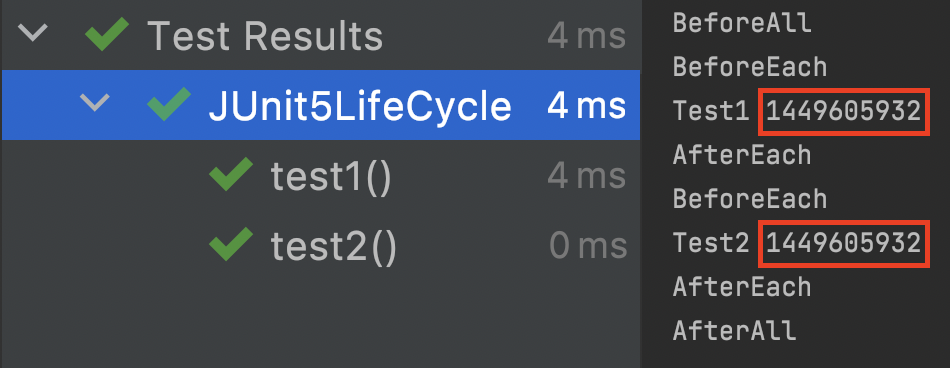
With the Test class annotated as PER_CLASS, you can now declare the BeforeAll and AfterAll as non-static functions as shown.
@BeforeAll
fun beforeAll() {
println("BeforeAll")
}
@AfterAll
fun afterAll() {
println("AfterAll")
}That's it! That is all to it for the JUnit5 Lifecycle.
Can we have multiple @BeforeEach functions?
Now we can really get into our main objective of this exercise, the Unit Testing, but, before that, let's have a look at what Unit Test really is.
A unit test is a way of testing a unit - the smallest piece of code that can be logically isolated in a system.
Let's also have a look at what is not a Unit Test.
So keep those things in mind when writing your tests whether you are writing a Unit Test or something else, Integration Test for example.
In this session, we will be putting what we know so far into practice by creating a brand new unit test on a new class.
Press Command + O then type NewUserUseCase.
Pressing Command + N then choose Test..
Or
Pressing Command + Shift + T, which will ask you to either create a new test or navigate to the existing one.
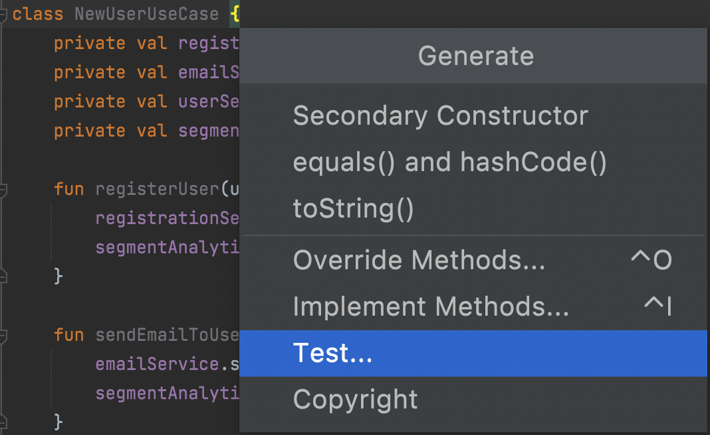
Right click anywhere on the test class and choose Generate
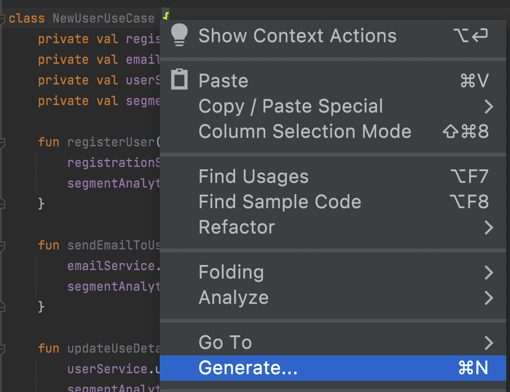
Then choose Test...
Leave everything to default and click OK.
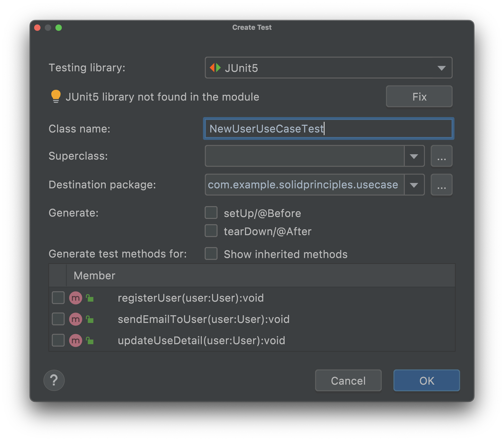
And click OK again.
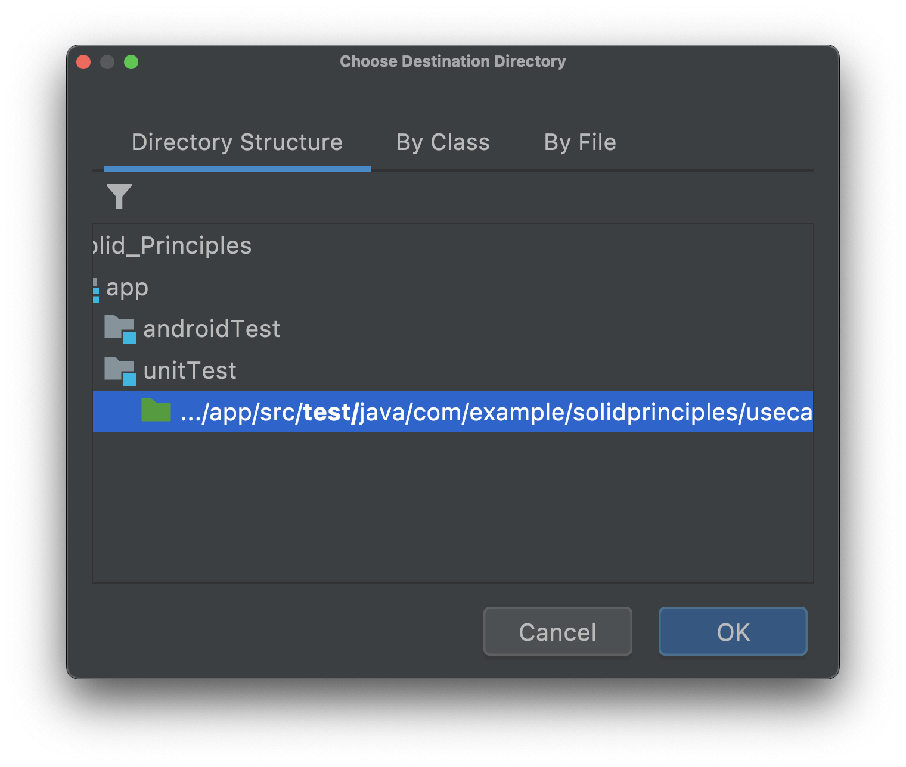
First, we will be writing one test function together then you can finish the rest on your own. To begin with, we will be writing a unit test for the registerUser method to see whether it works as expected or not.
BBD naming conventions seems to be quite popular amongst developers when it comes to writing unit tests. Here is the format:
Given... When... Then...
To explicitly explain this in plain English, it goes like this:
Given pre-conditions or certain inputs When do something Then expectation
Now let's look at our registerUser, here is what I would describe our test method as
Given a userWhen registering that userThen I would expect registrationService would be called to register the user with the backend.So it would become
@Test
fun `GivenUser WhenRegister ThenCallServiceToRegisterUser`() {
//TODO: check if the registration service is called
}private lateinit var newUserUseCase: NewUserUseCase @BeforeEach
fun init() {
newUserUseCase = NewUserUseCase()
} @Test
fun `GivenUser WhenRegister ThenCallServiceToRegisterUser`() {
// init mock
val user = User("User Name")
// execute test
newUserUseCase.registerUser(user)
// verify
// ??????
}As it appears that we cannot verify what actually happens once the registerUser(user) is called. Next we will be assessing the situation, finding the root cause, and addressing the problem.
Let's first have a look at the NewUserUseCase implementation
class NewUserUseCase {
private val registrationService = RegistrationService()
. . . . .
fun registerUser(user: User) {
registrationService.register(user)
}
. . . . .
}As you may now see that the NewUserUseCase is like a black box. The RegistrationService is declared privately and cannot be accessible from the outside world, therefore, cannot be tested as we cannot verify whether it actually does what it is supposed to.
Making the registrationService a public field would ease the situation and make the class testable. So our test will now become
@Test
fun `GivenUser WhenRegister ThenCallServiceToRegisterUser`() {
// init mock
val user = User("User Name")
newUserUseCase.registrationService = mockk()
justRun { newUserUseCase.registrationService.register(any()) }
// execute test
newUserUseCase.registerUser(user)
// verify
verify { newUserUseCase.registrationService.register(user) }
}Instead of mocking, you can instead use spyk(...) to achieve the same effect. However, please note that a spy is used upon an instance of the object that has already been initialized. This comes into handy when you are dealing with external code or a third-party library that you do not have access to their code. Below is an example of how you can use a spy.
newUserUseCase.registrationService = spyk(newUserUseCase.registrationService)Mocking is primarily used in unit testing. An object under test may have dependencies on other (complex) objects. To isolate the behaviour of the object you want to test, you replace the other objects by mocks that simulate the behaviour of the real objects. This is useful if the real objects are impractical to incorporate into the unit test.
In the above example,
newUserUseCase.registrationService = mockk()Denotes that the registrationService is mocked. The syntax mockk() is from MockK mocking framework, which we will be using throughout the course. By default, the mock itself does not do anything unless it is told to. This is why we also need the next line to tell it what to do, which in this case when the registrationService.register(...) is called.
justRun { newUserUseCase.registrationService.register(any()) }justRun {...} tells the mock to just execute the method without returning anything (e.g. returning Unit). If your mock returns a value, instead of justRun {...}, you have to use every {...} Returns T syntax.
any() tells the mock that the method should accept any parameters we throw at it.
Another way to allow the mock creation without any specific behavior is to passing relaxed = true when declaring the mock. For example,
newUserUseCase.registrationService = mockk(relaxed = true)This way we can also run the test without having to specify the mock's behavior e.g.
justRun { newUserUseCase.registrationService.register(any()) }So our test becomes
@Test
fun `GivenUser WhenRegister ThenCallServiceToRegisterUser`() {
// init mock
val user = User("User Name")
newUserUseCase.registrationService = mockk(relaxed = true)
// execute test
newUserUseCase.registerUser(user)
// verify
verify { newUserUseCase.registrationService.register(user) }
}In addition,
verify { newUserUseCase.registrationService.register(user) }is the same as
verify { newUserUseCase.registrationService.register(eq(user)) }Furthermore, if you do not care about what being passed in as the parameter, you can also use any().
verify { newUserUseCase.registrationService.register(any()) }Additionally, you can also check how many times the mock is executed by adding
verify(exactly = 1) { newUserUseCase.registrationService.register(any()) }The goal of the SOLID principles is to reduce dependencies so that we can change one area of software without impacting others. Additionally, they're intended to make designs easier to understand, maintain, and extend.
Every class, module, or function in a program should have one responsibility/purpose in a program.
Objects or entities should be open for extension but closed for modification.
Objects of a superclass should be replaceable with objects of its subclasses without breaking the application.
No code should be forced to depend on methods it does not use.
high level modules should not depend on low level modules and both should depend on abstractions.
This principle simply states that classes should achieve polymorphic behavior and code reuse by their composition (by containing instances of other classes that implement the desired functionality) rather than inheritance from a base or parent class, which make the composition more loosely coupled than the inheritance.
Interface Analytic {
fun trackEvent(e: Event) { ... }
fun trackView(v: View) { ... }
}
Class SegmentAnalytic: Analytic {
override fun trackEvent(e: Event) { ... }
override fun trackView(v: View) { ... }
}Now let's consider the case where we need a little more specialize case of the SegmentAnalytic, for example, adding a transaction id along with other analytic data. We could either implement it using
Class TransactionAnalytic: `SegmentAnalytic` {
override fun trackEvent(e: Event) {
addTransactionId(e)
`super.trackEvent(e)`
}
private fun addTransactionId(e: Event) { ... }
...
}Or
Class TransactionAnalytic(`segment: Analytic`): Analytic {
override fun trackEvent(e: Event) {
addTransactionId(e)
`segment.trackEvent(e)`
}
private fun addTransactionId(e: Event) { ... }
...
}The vial differences are highlighted in `Green`. While both implementations can achieve the exact same result, e.g. code reuse, the later approach has the advantage that the child is loosely coupled to its parent, which will make a difference in terms of maintenance and unit testing.
class NewUserUseCase {
var registrationService = RegistrationService()
private val emailService = EmailService()
private val userService = UserService()
fun registerUser(user: User) {
registrationService.register(user)
}
fun sendEmailToUser(user: User) {
emailService.sendEmailToUser(user)
}
fun updateUseDetail(user: User) {
userService.updateUserDetail(user)
}
}To break it down, the NewUserUseCase breaks multiple principles but, for now, what we are interested in particularly is the Dependency Inversion Principle. Not only the class publicly exposes its field or property so that we can write test for the class, it also know how to initialize the RegistrationService.
After applying the principle to achieve the same effect, the RegistrationService is passed in as a constructor parameter instead of being declared and initialized privately.
class NewUserUseCase(
private val registrationService: RegistrationService,
. . . .
) {
fun registerUser(user: User) {
registrationService.register(user)
}
. . . .
}And our test will become
internal class NewUserUseCaseTest {
private lateinit var newUserUseCase: NewUserUseCase
private val registrationService: RegistrationService = mockk(relaxed = true)
. . . .
@BeforeEach
fun init() {
newUserUseCase = NewUserUseCase(registrationService, ...)
}
@Test
fun `GivenUser WhenRegister ThenCallServiceToRegisterUser`() {
// init mock
val user = User("User Name")
// execute test
newUserUseCase.registerUser(user)
// verify
verify { registrationService.register(user) }
}
}If you are interested in seeing the fully refactored code, please check out the refactor-original-code branch.
git switch /feature/refactor-original-code
If you are asked to write two classes that represent Squares and Rectangles, which one would be your base class?
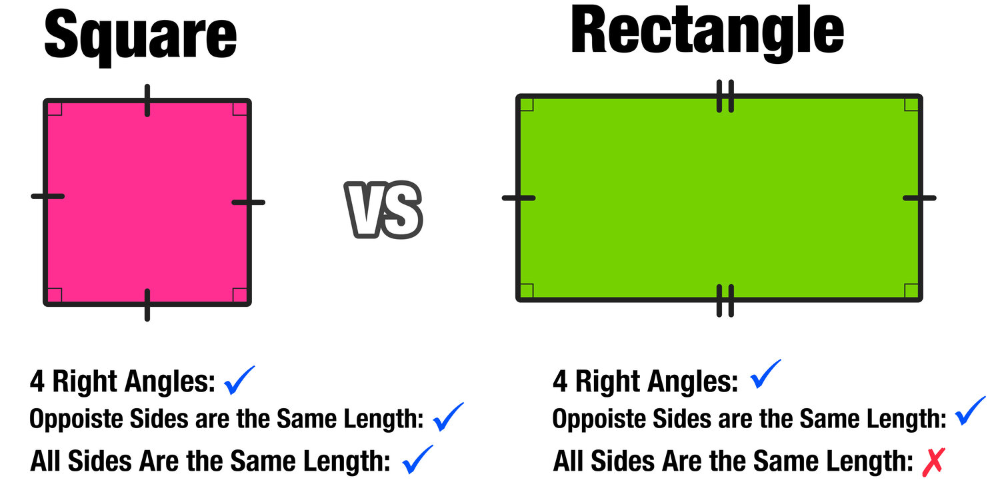
Let's recap what we have so far.
class NewUserUseCase(
private val registrationService: RegistrationService,
. . . .
) {
fun registerUser(user: User) {
registrationService.register(user)
}
. . . .
}And the test
internal class NewUserUseCaseTest {
private lateinit var newUserUseCase: NewUserUseCase
private val registrationService: RegistrationService = mockk(relaxed = true)
. . . .
@BeforeEach
fun init() {
newUserUseCase = NewUserUseCase(registrationService, ...)
}
@Test
fun `GivenUser WhenRegister ThenCallServiceToRegisterUser`() {
// init mock
val user = User("User Name")
// execute test
newUserUseCase.registerUser(user)
// verify
verify { registrationService.register(user) }
}
}MockK is a mocking framework which allows us to isolate and simulate objects in unit testing. It also allows us to check whether or not the mock works exactly as it should be. Taking an example from the above code, verify { ... } checks for 2 things in order to pass the test.
Firstly it checks whether the mock, registrationService.register(...), is called or not. Secondly the parameter being passed in is exactly the same as the one the mock receives.
Let's make some changes to the NewUserUseCase so that it applies some changes to the data just like it would in the real world, for instance, appending a timestamp to the user name.
class NewUserUseCase(
private val registrationService: RegistrationService,
. . . .
) {
fun registerUser(user: User) {
registrationService.register(
user.copy(name = "${user.name}-${Date().time}")
)
}
}If you run the test again, it should fail.
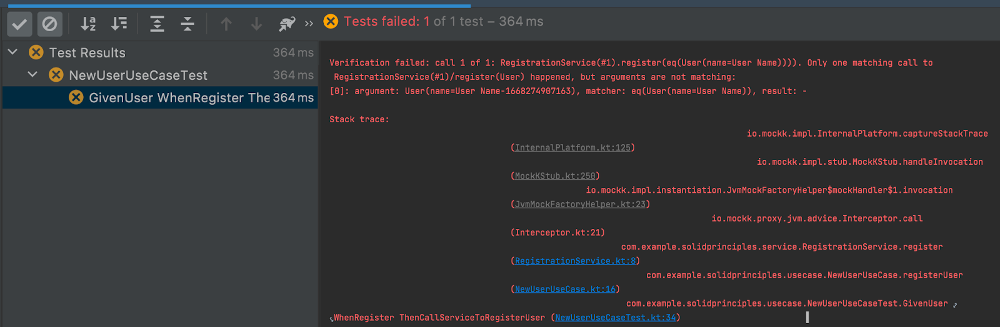
The interesting thing is this particular statement.
arguments are not matching: [0]: argument: User(name=User Name-1668274907163), matcher: eq(User(name=User Name))
Now we will have to fix our test too but how? Please take a moment to think what would you do in this situation.
One common mistake that could happen here is that one would copy & paste the code from what we have just changed into our test like this
verify {
registrationService.register(
user.copy(name = "${user.name}-${Date().time}")
)
}If you try to run the test, it would fail miserably. Let's have a look at the error message.
arguments are not matching: [0]: argument: User(name=User Name-1668275599662), matcher: eq(User(name=User Name-1668275599922))
As you can clearly see, the timestamps are different! This is because the code is executed first then, slightly after, the test so it is natural that the timestamps are not the same.
I am almost certain that some of you would then think of checking whether or not the timestamp is within a certain range. This is yet another common mistake as there is no guarantee of how long the code would take to execute.
A cleaner way to test this is to somehow be able to capture the exact parameter being passed in and check if a timestamp is appended. Fortunately MockK has already provided us a way to do just that and I mean capturing the parameter. Now let's update our test.
First declare a capture slot as shown
val captureSlot = slot<User>()Then capture the parameter inside the verify { ... } statement as shown
verify {
registrationService.register(capture(captureSlot))
}Congratulations! Now that you have successfully captured the User parameter and it can be accessed by using captureSlot.captured syntax. This will give you the User parameter that the mocked receives.
Next we have to check whether the timestamp is appended to the end of the username or not and, in this case, let's say that we do not care what the timestamp really is for as long as it is there. However, as mentioned above, there is no way to achieve what we want as this is not what mocking framework is designed to do.
Assertion comes to rescue. A simple explanation of the Assertion is as follow
An assertion is a boolean expression at a specific point in a program which will be true unless there is a bug in the program.
Below code show one way of writing assertions to test the code.
val splits = captureSlot.captured.name.split("-")
Assertions.assertEquals(2, splits.size)
Assertions.assertEquals(user.name, splits[0])
Assertions.assertTrue(splits[1].isNotEmpty())Firstly username is splitted in half exactly where the "-" is and, as a result, this should occupy 2 memory slots inside the list called splits. The first, splits[0], should contain the username and the second, splits[1], should be our timestamp.
As you can see that we only check if it is not empty as we do not care what it is for as long as it presents. In any unfortunate events that the timestamp is not appended, the assertions should fail for either the size of the array are not what is expected, e.g. 2, or the timestamp becomes empty.
There are bunches of available APIs, from both MockK and Assertions, we can use to write our unit test. You can check them out by following the links down below. Knowing the features of these tools will help you write a better unit test.
Here is also an interesting comparison between the Assertion libraries.
https://github.com/phellipealexandre/KotlinAssertionLibraryComparison
Which one would you prefer?
class NewUserUseCase(
private val registrationService: RegistrationService,
. . . .
) {
. . . .
}VS
class NewUserUseCase {
private val registrationService: RegistrationService by inject()
. . . .
}Before we begin, please fork
https://github.com/monacohq/monaco-android
Then clone it
git clone git@github.com:monacohq/monaco-android.git
Then switch to the branch feature/basic-unit-test
git switch feature/basic-unit-test
PortfolioTrackingViewModelBy pressing Command + O, then type PortfolioTrackingViewModel
If you cannot remember how, please revisit Write Your First Unit Test.
@ExtendWith(
MockKExtension::class
)
internal class PortfolioTrackingViewModelTestIf you remember from our previous session, here is how we mock an object.
variable-name: variable-type = mockk([relaxed = true])By applying the MockKExtension, it allows us to annotate any variables that we want to mock as shown below.
@MockK(relaxed = true)
lateinit var settingRepository: ISettingRepository@MockK(relaxed = true)
lateinit var urlRepository: UrlRepositoryprivate lateinit var vm: PortfolioTrackingViewModel
@BeforeEach
fun init() {
vm = PortfolioTrackingViewModel(settingRepository, urlRepository)
}By passing in 2 mocks into our constructor, we can easily control their behaviors and verify if the code work exactly what it should be.
The SetEnablePieChartIcon is an UiAction which contains 2 possible values, either TRUE or FALSE. So we end up with 2 tests, one where the value is TRUE and other where the value is FALSE.
@Test
fun `GivenTrue onUiAction UpdateViewState`() = runTest {...}
@Test
fun `GivenFalse onUiAction UpdateViewState`() = runTest {...}@Test
fun `GivenTrue onUiAction UpdateViewState`() = runTest {
vm.viewStateFlow.test {
with(awaitItem()) {
Assertions.assertTrue(enablePieChartIcon)
}
vm.onUiAction(PnlTrackingState.Action.SetEnablePieChartIcon(true))
expectNoEvents()
}
}Press Control + Shift + R.
Great! You should now get an error as the function is a co-routines and we have not set the main dispatcher yet. So fix the code by adding
@BeforeEach
fun init() {
Dispatchers.setMain(UnconfinedTestDispatcher())
}Run the test again and it should now pass.
Please complete the other test for yourself and see you in the next session.
Let's pick up another class to write our Unit Test.
If you cannot remember how, please revisit Write Your First Unit Test.
By pressing Command + O, then type CaCardShippingAddressConfirmationViewModel
@ExtendWith(
MockKExtension::class,
InstantExecutorExtension::class,
TestRxJavaExtension::class
)
internal class CaCardShippingAddressConfirmationViewModelTest@MockK(relaxed = true)
lateinit var translationRepo: TranslationRepositoryprivate lateinit var vm: CaCardShippingAddressConfirmationViewModel@BeforeEach
fun init()Inside the BeforeEach method, create the Koin instance.
@BeforeEach
fun init() {
startKoin {
modules(
module {
single { translationRepo }
}
)
}
}vm = CaCardShippingAddressConfirmationViewModel(
mockk(relaxed = true),
translationRepo,
mockk(relaxed = true),
mockk(relaxed = true),
mockk(relaxed = true),
mockk(relaxed = true)
)@Test
fun `Given resourceId WhenGetCaptionObs Then return StringValue`() {
every {
translationRepo.getStringRx(any(), *anyVararg())
} returns Maybe.just("Test")
vm.captionObs.test().assertValue("Test")
}Press Control + Shift + R.
Congratulations! That is how you test the RxJava as simple as that. Next we will be seeing how we can test a LiveData as well.
Often in the main app, you will find yourself a very familiar situation as our first unit test. The class that we are about to test cannot be unit tested, not unless we make some changes.
Change the mAddress declaration visibility to public for testing.
From
private var mAddress = MutableLiveData<CaAddress?>(null)To
@VisibleForTesting
var mAddress = MutableLiveData<CaAddress?>(null)@Test
fun `GivenAddress = "Test" WhenGetTvAppliedAddressText Then return "Test"`() val obs = TestObserver<String>()
vm.tvAppliedAddressText.observeForever(obs)
Assertions.assertTrue(obs.values().isNotEmpty())
Assertions.assertTrue(obs.values().first().isEmpty())
vm.mAddress.value = CaAddress(address = "Test")
Assertions.assertEquals("Test,\n", obs.values().last())Press Control + Shift + R.
Oops! Koin is back to haunt us again. Let's fix the error by cleaning up the Koin instance from the previous session.
Fix the bug by adding AfterEach method to stop Koin.
@AfterEach
fun cleanUp() {
stopKoin()
}Press Control + Shift + R.
Congratulations! We have successfully run the tests for both LIveData and RxJava.
In this tutorial, you have learned how to create and write unit tests. Furthermore, you have already learned how to handle Coroutines, RxJava, LiveData, and Koin when writing tests. Last but not least, you have also learned how to refactor the code to make it testable, although not necessarily a unit test, using some of the best practices.
Thank you for reading this far and see you again in the next tutorial where we will be digging deep into the feature of the JUnit5 and more advance cases for testing such as how to handle DI graph.
If you like this tutorial and want to see more tutorials like this, please help me making it happens by taking this short survey, https://forms.gle/vdiCfQoiLnuDLb7m9. Thanks and see you next time!